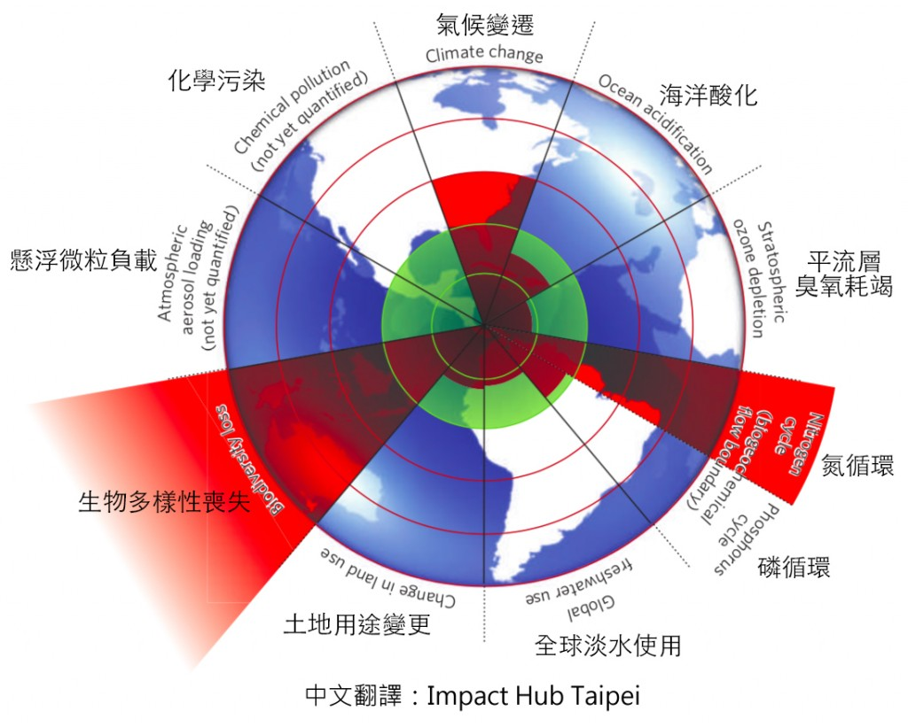

何謂地球限度
如同各種生物的容忍程度是有限度的，地球的容忍也是有限的，2009年許多環境科學家組成團隊並列出地球限度的指標
- 氣候變遷
- 海洋酸化
- 平流層臭氧耗竭
- 氮循環
- 磷循環
- 全球淡水使用
- 土地用途變更
- 生物多樣性喪失
- 懸浮微粒負載
- 化學汙染
地球限度到哪了？
自工業化後，許多生產用機器逐漸出現，增進了生產速度，也增加了環境的破壞。人類的增加，所消耗的資源也越來越多
據聯合國環境屬報告指出，目前資源消耗量約470億到590億頓，若繼續增長，未來將達到1400億頓，這不是地球所能負擔的
。
上段指出的地球限度中，因為上述的「功績」磷循環與海洋酸化已逼近地球限度，
而氣候變遷、氮循環、生物多樣性早已大幅超越地球所能負擔的限度了

氣候變遷的原因及影響
造成氣候變遷有許多原因，全球暖化絕對是排名第一的，至於為什麼會全球暖化呢？最主要的原因有兩個，
臭氧層破洞、臭氧層變厚，聽起來是不是很怪？不過事實就是這樣，於南北極上方的臭氧層，因氮排放過多，
而導致破洞，太陽光與輻射直接照射，導致冰層的加速融化。
不僅如此，都市地區的二氧化碳排放，
導致臭氧層增厚，太陽送進來的熱無法散出去，讓地球整體都變熱了，你說這還不嚴重嗎？
我們真的無能為力？
並不是我們無能為力，我們能做到的事非常多，但人們都做不起來，例如大家常聽到的：少用冷氣、少用電
、少吃牛肉、多走路...等等，但隨著時代進步，人類對機器的依賴越來越高，我們真的有辦法捨棄這些東西嗎？
在人感受到絕望之前，是很難改變的，但現在有不少科學家開始發明污染度不高，又能製造能源的機器，
我認為這是其中一個方法，就是幫助現代科技的發展，不過誰知道到時候又會有什麼問題呢？
永續方法調查
我們列出了幾項籠統的方式，能做得到請打勾，或是您有什麼其他能做到的事情，請在其他欄填寫～